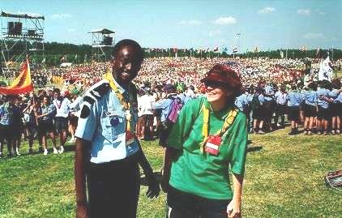

World Organization of the Scout Movement


 Scouting and Peace
Baden-Powell, A Man of Peace
Here are some extracts from the "Baden-Powell, A Man of Peace" exhibition athe World Scout Jamboree. They can be of use to leaders and Scouts around the world as a source of inspiration and reflection concerning our Founder, our Movement and its mission in the world.
An experimental camp and a book
In August 1907, B.P. brought together 20 boys from different social backgrounds on Brownsea Island. They built huts, played sports and other outdoor activities, shared experiences and helped the local population.... Enthusiasm was great. Scouting was born.
When he published "Scouting for Boys" in 1908, B.P. had no idea that he had just written something that would change the lives of millions of young people throughout the world. Taking inspiration from his own life and experience, he invited young people to take charge of their own education and to be responsible for their own future.
When the book was published, there were 50,000 Scouts in England. The reputation of the Movement spread overseas. In May 1909, Scouting was established in Chile - which BP had visited 2 months earlier. From that moment on, Scouting became an international Movement.
Serving young people in society: Being prepared
Everyone knows that "being prepared" is the Scout motto, but it is not just motto. "Being prepared" is an invitation to find out and to learn, to discover oneself and to do one's best throughout life.
Being prepared means choosing to be autonomous, supportive, responsible and committed.
- Autonomous able to make one's own decisions and to manage one's life.
- Supportive: able to actively care about and for others.
- Responsible: able to assume the consequences of one's decisions, to keep one's commitment
and to complete what one undertakes.
- Committed: able to live according to one's values, to support causes or an ideal which one finds important.